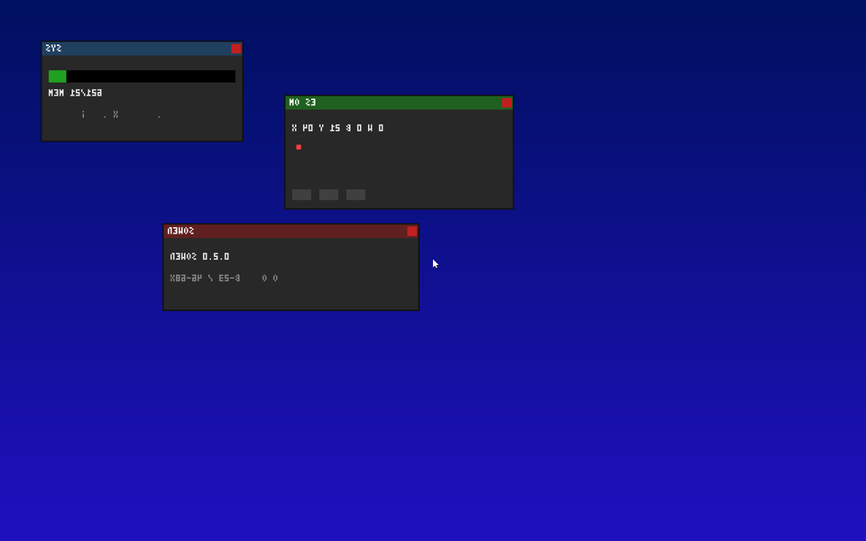
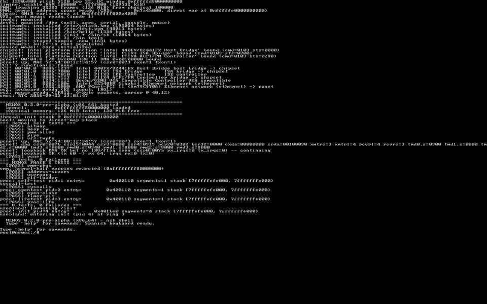
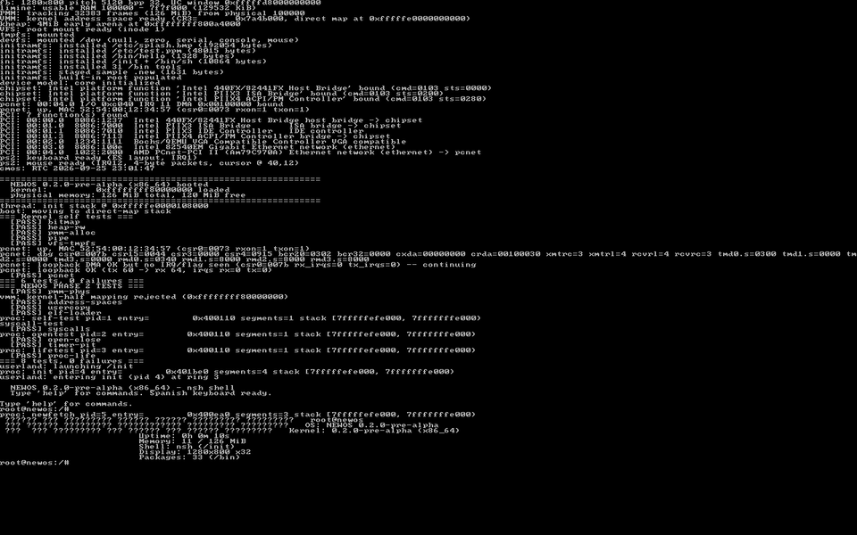

Rendimiento desde cero · x86_64 · MIT
NEWOS es un kernel monolítico x86_64 freestanding con ABI propia, VFS, PMM bitmap+buddy, drivers PCI/PCnet/serie/PS2/PIT/CMOS, framebuffer, shell interactiva nsh, 30 herramientas en /bin, gestor de paquetes nativo .new y libc.a propia.

Sin mockups: estas imágenes salieron del framebuffer del propio NEWOS (1280×800 x32), capturadas por el puerto de monitor de QEMU mientras el sistema corría de verdad — boot, newfetch tecleado por PS/2 y el compositor desktop.


Así arranca NEWOS en QEMU (consola serie real) y debajo puedes usar el shell nsh simulado en tu navegador con salidas reales del OS. Escribe help y experimenta (↑/↓ historial, Ctrl+L limpia). El sistema de verdad arranca con make qemu-limine.
NEWOS x86_64 boot: entry(magic=0x336ec578, info=...) boot: PVH protocol detected PMM: tracking 32640 frames (127 MiB) VMM: kernel address space ready (CR3=..., direct map 0xfffffe0000000000) === 6 tests, 0 failures === === 8 tests, 0 failures === userland: entering init (pid 4) at ring 3 NEWOS 0.2.0-pre-alpha (x86_64) booted NEWOS: boot complete. root@newos:/# newfetch █▄ █ █▀▀ █░ █░ █▀█ █▀▀ root@newos █ ▀█ █▀▀ █▄▀█ █▄█ ▀▀█ OS: NEWOS 0.2.0-pre-alpha ▀ ▀ ▀▀▀ ▀ ▀▀ ▀ ▀▀ ▀▀▀ Kernel: NEWOS x86_64 · Shell: nsh
Por qué NEWOS es diferente
El árbol es estrictamente por capas y modular. Cada fichero vive en un dominio, lleva su prefijo y el linter de capas lo verifica en cada build.
PVH (qemu -kernel), Multiboot2 (GRUB) y Limine (BIOS+UEFI, única con framebuffer).
read/write/open/close/mkdir/readdir, spawn2/waitpid/ps/kill, uname/gettime/sysinfo, fbinfo/fbwrite.
Shell nsh + toolbox de 30 (ls cat ps desktop img vid …) + hello.
6 fase-1 kernel + 8 fase-2 userland/ABI. QEMU sale con código 1 = PASS.
Triple arranque
El header Multiboot2, la nota ELF PVH y las peticiones Limine coexisten en la imagen. Cada bootloader usa su entrada e ignora el resto.
qemu -kernel build/images/newos-x86_64.elf. Detecta la magia 0x336ec578, arranca rapidísimo por consola serie. Ideal para desarrollar y para make qemu-test.
make iso genera ISO reproducible byte-idéntica. Cabecera validada en CI con grub-file --is-x86-multiboot2. Trampolín 32-bit → long mode.
ISO híbrida BIOS+UEFI, única vía con framebuffer (ventana UC, fbcon, img, vid, desktop). v12.9.0 cacheada en build/.
git clone https://github.com/CRISTOP-bot/NEWOS.git newos && cd NEWOS make all # → build/images/newos-x86_64.elf make qemu # arranque interactivo (serie) make qemu-test # suite 14 tests, exit 1 = PASS make check-newpkg # tests de paquetes (sin QEMU)
qemu-system-x86_64 -kernel build/images/newos-x86_64.elf \ -serial stdio -no-reboot -m 128M \ -device isa-debug-exit,iobase=0xf4 -append "test_mode=1" # exit 1 = todo PASS · exit ≥3 = fallo
Requisitos: gcc make nasm ld qemu-system-x86_64 python3 (+ grub-mkrescue/xorriso para ISOs, OVMF para UEFI). Toolchain cruzada opcional: make toolchain (binutils 2.44 + GCC 16.1.0).
| Capa | Directorios | Qué hace |
|---|---|---|
| L0–L1 base | lib/kernel (iru_*), abi/ | Utilidades kernel + ABI pública autocontenida (syscalls, multiboot2). |
| L2–L3 boot | arch/x86_64, core/ | Trampolín, paging, GDT/TSS, IDT, PIC · printk/panic/init/selftests. |
| L4–L5 hw/mem | drivers/, mm/ | Serie/VGA/fb, PCI, PCnet, PS2, PIT/CMOS · PMM bitmap+buddy, VMM, kheap. |
| L6–L8 fs/proc | fs/, process/, ipc/ | VFS tmpfs/devfs/initramfs · ELF loader, scheduler, pipes. |
| L9–L10 api/user | syscall/, user/, libc/ | Dispatcher int $0x80 (0–21) · nsh + 30 tools · libc.a freestanding. |
Ver documentación completa → · Tabla de syscalls → · Sistema de paquetes →
Preguntas frecuentes
No. No hay ni una línea de Linux: kernel, ABI de syscalls, libc, shell, VFS, drivers y gestor de paquetes están escritos desde cero en este repo. Solo usa herramientas host (gcc, QEMU, GRUB) para compilar y arrancar.
En cualquier x86_64 con ≥128 MiB: QEMU (PVH, ISO GRUB o ISO Limine), VirtualBox (ISO como CD, BIOS legacy) y hardware real por USB/CD. Validado en SeaBIOS y OVMF/UEFI. ARM64 y RISC-V solo existen como configs placeholder.
"Proprietary" ahí significa "propio / desde cero", no privativo. La licencia real es MIT: puedes usar, modificar y distribuir libremente. Ver LICENSE.
Todavía no: PCnet solo hace loopback (sin stack IP), el filesystem vive en RAM (sin driver de disco) y no hay USB/AHCI/NVMe. El formato de paquetes .new ya está diseñado para cuando lleguen red + persistencia + firmas.
Clona el repo, lee AGENT.md y docs/development/layering.md (el contrato de capas se verifica en cada build con make lint-layers), y abre un PR. CI: build + qemu-test + static-analysis.
Plan completo por hitos (v0.3 Persistencia → v1.0) en ROADMAP.md.
Descarga la ISO o el kernel, arranca QEMU en segundos y construye tu propio sistema desde cero.